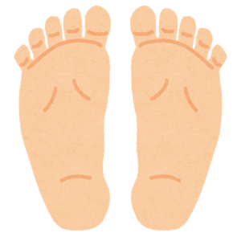
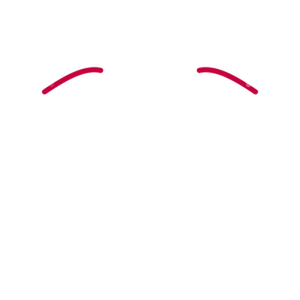
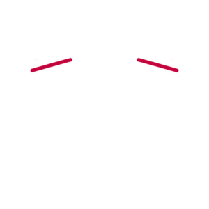
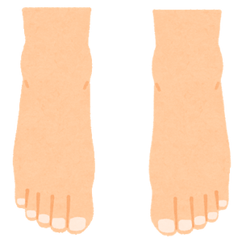
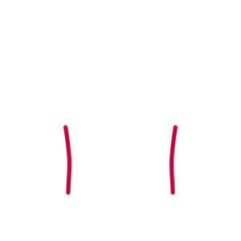
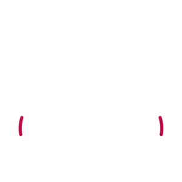
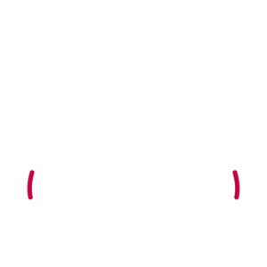
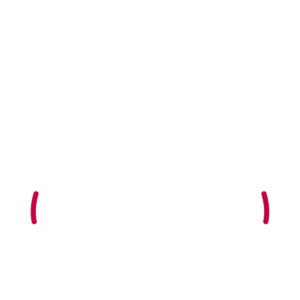
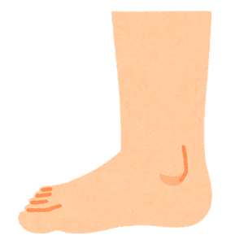
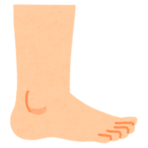

足つぼ.com






 





副鼻腔炎、蓄膿症、頭痛、脳震盪、めまい、発熱、自律神経にまつわる各症状
脳と体のバランス、分泌系（甲状腺、副甲状腺、副腎など）の疾患、幼児の発育不良、遺尿症、乳汁分泌不全、更年期障害
（アレルギー性）鼻炎、鼻詰まり、鼻水、鼻血、上気道炎
三叉神経痛、偏頭痛、目疲れ、顎の疲れ、顔全体の感覚神経、口腔、睡眠不足、耳下腺炎、目・耳・鼻の疾患
目の疲れ、結膜炎、角膜炎、近眼、老眼、緑内障、白内障、眼底出血、肩こり
難聴、中耳炎、耳鳴り
難聴、中耳炎、風邪
肩こり、寝違え
肩こり、寝違え
甲状腺ホルモンのバランス
むくみ、だるさ
肩こり、手の筋無力症・しびれ、寝違え
肩こり、肩周炎、肩疫痛
肺炎・喘息などの肺・気管支の疾患、便秘、腸炎、皮膚病、アレルギー
肺炎・喘息などの肺・気管支の疾患、便秘、腸炎、皮膚病、アレルギー
食道炎、膨満感
吐き気、嘔吐、胃痛、胃膨満、胃酸過多、消化不良、胃炎、胃下垂
部万缶、下痢、胃痙攣、呼吸困難、しゃっくり
不整脈、腎上腺皮質効能不全症、炎症、各種感染症、アレルギー、喘息、関節炎、リウマチ、失神
糖尿病、膵臓炎、消化系統疾患
腎臓疾患、高血圧、関節炎、泌尿系統感染
尿管結石、尿管炎、尿管狭窄、排尿困難
腎臓結石、尿管結石、膀胱結石、膀胱炎、腰痛
消化不良、十二指腸潰瘍、食欲不振、食中毒、胆嚢炎、胆石症
便秘、消化器系疾患、下痢、腹痛、腸炎
便秘、消化器系疾患、下痢、腹痛、腸炎
便秘、消化器系疾患、肥満、腹痛、腸炎
消化系統疾患、胃腸膨張、下痢、腹痛、急性腸炎、心臓病、不眠症
腹部膨満、虫垂炎、回盲弁の機能改善
結腸炎、直腸炎、ポリープ、便秘
便秘、痔疾
肝臓疾患、胆嚢炎、目の病気、生理不順、高血圧、更年期障害
胆石症、黄疸症、胆嚢炎、肝臓の疾患
心臓疾患、心筋梗塞回復期、心臓虚弱、不整脈狭心症、心不全の回復期、高血圧、心臓損傷
貧血、皮膚疾患、食欲不振、消化不良、発熱、炎症
肘関節の痛み、関節炎
リウマチ、坐骨神経痛、半身不随
仙骨、骨棘、坐骨神経痛
性機能の改善、生理不順、生理痛、更年期障害
歯痛、口内炎、歯周病、歯肉炎、錯味症、いびき
歯痛、口内炎、歯周病、歯肉炎、錯味症、いびき
呼吸道感染、扁桃腺炎
各種炎症、化膿、制癌
気管支疾患、食道疾患、喉の炎症、喘息、声帯ポリープ、声がれ、失音、気管支炎
乳腺、乳腺増殖、乳がん、食道疾患
めまい、乗り物酔い、高血圧、低血圧、耳鳴り、平衡障害、失神
肩痛、背痛、肩こり
しゃっくり、腹痛、お腹の張り、嘔吐
肋骨の各種病変、胸が苦しい、肋骨炎
各種炎症、発熱、化膿、筋腫、がん免疫力向上
各種炎症、発熱、化膿、筋腫、がん免疫力向上
生殖系統の病気、ヘルニア
通絡、活血、股関節痛、坐骨神経痛、腰背痛、痔の痛み
首の筋違い、寝違え、頭痛、首のこり
カルシウム不足よる症状、筋肉痛、手足のしびれ、爪の軟化、白内障、癲癇
ヘルニア、腰痛、ぎっくり腰
腰背部痛、腰椎間板ヘルニア、腰痛、骨棘、ぎっくり腰
仙骨、骨棘、坐骨神経痛
陰茎・陰道・尿道
男性：前立腺肥大、前立腺炎、頻尿、排尿困難、尿穴、尿道疼痛 女性：子宮筋腫、生理痛、生理不順、子宮下垂
だるさ、イライラ、膝痛、腰痛、足の捻挫、足腰の冷え、精神不安定、小児ひきつけ
だるさ、食欲不振、吐き気、下痢、お腹の張り
だるさ、イライラ
食欲不振
食欲不振、胃腸炎
胃腸炎、高血圧、歯痛
肩こり、頭痛
目の疲れ
食欲不振、歯痛、膝痛
頭痛、耳鳴り
頻尿、膀胱炎
生理不順、火照り、足腰の冷え
胃腸炎、吐き気、胃痛、下痢、腰痛、飲み過ぎ食べ過ぎ
足の捻挫、お腹の張り、顔のむくみ、
足のむくみ
頭痛、耳鳴り、火照り、目眩
生理の違和感、生理痛、足腰の冷え、シミ、新陳代謝、頻尿
食あたり
痛み
胆（決断力・判断力）、痛み
更年期障害
不眠症